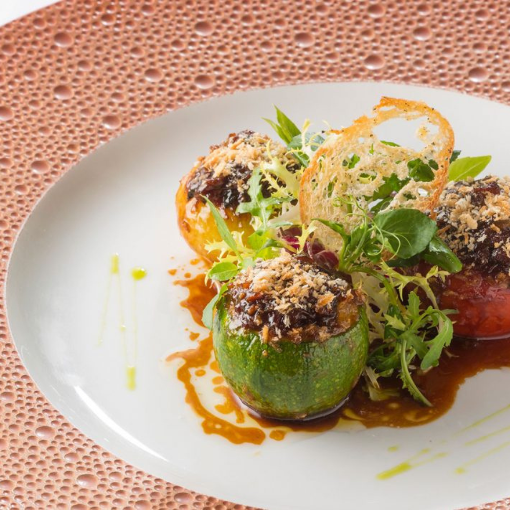

Finely dice the carrots, the white parts of the chard, peppers and courgettes (Brunoise cutting method) Chop the onion, garlic, the green parts of the chard and basil. In a saucepan, sweat the onion and garlic in olive oil. Add the finely chopped vegetables. When these are cooked, pour the veal stock with the parmesan and egg, and continue to cook until a uniform mixture is obtained. Store in the fridge.
Cut the vegetables and scoop out the centre. Slightly scoop out the top of the courgette. Cook the onion and courgette for approximately 15 minutes. Stuff the vegetables. Fix the top of the onion with a wooden toothpick. Stuff the tomatoes, courgettes, and onions. Cook in the oven at 350°F for approximately 20 minutes or more depending on the thickness of the vegetables.